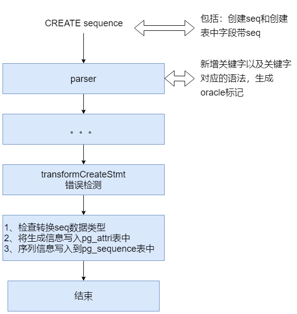
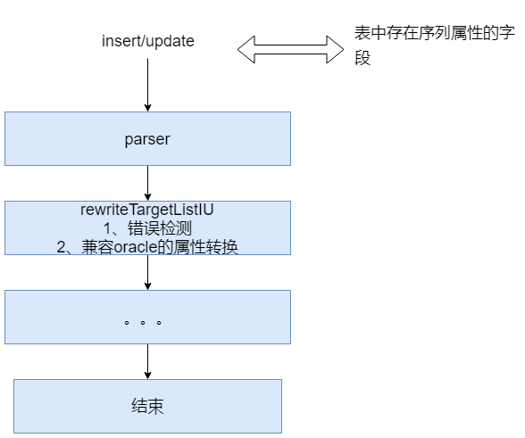

兼容oracle-sequence 1. 目的 为了兼容oracle-sequence，先需要将postgres 原有seq的基础上对其功能进行改进，以达到目的。 2. 功能实现 2.1. Create sequence 包括直接create sequence和 create table字段带有序列属性,流程图如下：  由于oracle与pg seq 存在差异，因此在pg_attri表中attidentity字段中增加了3个ora seq的特性: i:代表兼容Oracle的generated always选项 o:代表兼容Oracle的generated by default选项 n:代表兼容Oracle的default on null选项 2.2. Alter sequence 包括直接alter sequence和 alter table 带有序列属性字段。其流程与create sequence类似。 2.3. Update/insert 对于insert 和update 表中的序列字段，需要做一些限制的判断。以及一些oracle需要的属性转换,流程图如下：  2.4. Pg_dump 数据导出的过程中，会生成创建表的SQL，需要依赖pg_attri表中attidentity字段的值去判断，以此来生成创建orq seq的SQL语句 3. 测试用例 create sequence test1 nomaxvalue nominvalue nocycle cache 20 noorder ; postgres=# alter sequence test1 maxvalue 9999 minvalue 1 cycle cache 2 order; dorp sequence test1; create table t2 (id int GENERATED BY DEFAULT AS IDENTITY start with 1, id2 int ); 双模式设计